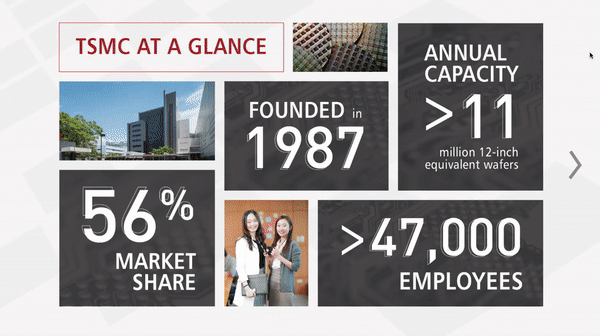
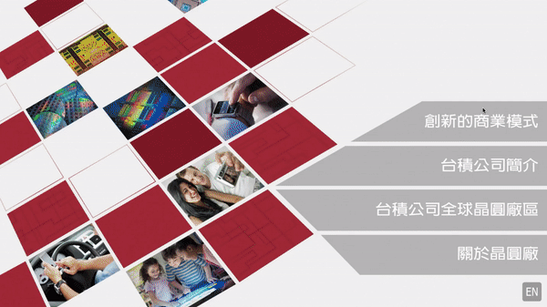

<html>
	<head>
		<title>Rebecca Yeap</title>
		<link rel="stylesheet" type="text/css" href="assets/css/bootstrap.min.css">
		<link rel="stylesheet" type="text/css" href="assets/css/tsmc.css">
		<meta name="viewport" content="width=device-width, initial-scale=1.0">
	</head>
</html>
<body>
	<div id="navbar">
		<div id="labels-container">
		<div class="headerlabels" style="display: flex;">
				<div class="about">
					<a href="about.html">ABOUT</a> 
				</div>
				<div class="work">
					<a href="work.html">WORK</a> 
				</div>
				<div class="nonwork">
					<a href="nonwork.html">WORK</a> 
				</div>
			</div>
		</div>
		<div>
			<!---->
		</div>
	</div>
	<div class= "container-fluid" id="about_block"> 
		<div class="row">
			<div class="col-md-6 offset-md-2">
				<div style="padding-top: 100px; margin-left: 50px">
					<h2>TSMC Nanjing Fab & Design Center</h2>
					<p>product design | brand management | internship</p>
				</div>
				<div class="row">
				<div class="col-md-6" style="padding-top: 20px; margin-left: 50px">
					<p><a href="http://www.tsmc.com/english/default.htm">TSMC</a> is the world’s leading semiconductor foundry, manufacturing over 9,920 different products for global giants such as Apple, Intel, and Qualcomm. As a brand management intern at the headquarters in Hsinchu City, Taiwan, I worked on the content branding, the complete UX design of the touchscreen interface and the overall showroom experience for the latest center in Nanjing, China.   
					 </p>  
					<p>My process started with an exploratory phase involving industry and company research followed up by a series of wireframes to higher-fidelity mockups and prototypes of over 80 screens for both English and simplified Chinese. Additionally, I worked with the time, financial, and software implementation restraints and cycles of user interface testing until my work was approved for implementation in September 2018. </p>
					</div>
				
			</div>
		</div>
		<div class="row">
			<div class="col-md-8 offset-md-2"> 
				
					 
					 
			</div>
			
		</div>
	</div>
		
</body>
</html>